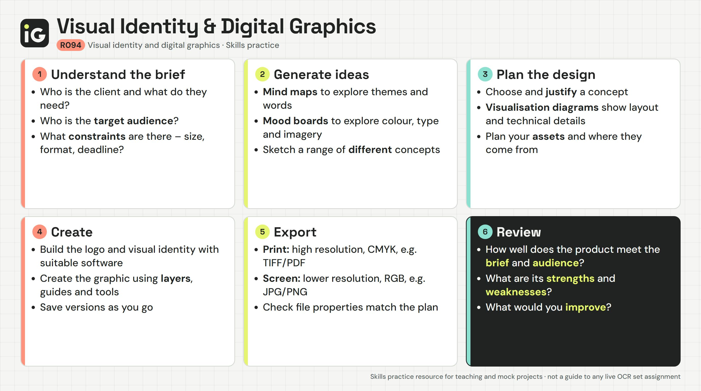

Skills practice resource. These guides support teaching and mock projects. They are not a guide to any live OCR set assignment. During your assessed NEA, follow only your teacher's instructions and the OCR set assignment.
R094 / Graphics studio
Designing a
Designing a
graphics product.
From your first sketch to your final export. Make a visual identity with purpose, and show the thinking behind it.
Your project essentials
Good work. Great evidence.
Keep your research, decisions and development together in your project log.
The creative process
Your project, step by step.
Use these guides to practise each skill before your assessed project.
0 / 15 guides completed
Progress is saved on this browser. Export it to move to another device.
Studio practiceShow the process.
Show the process.
Explain the purpose.
A finished logo shows what you made. Your development evidence shows how you made it and why it works for the client and audience.
Explain each choice in your own words, linked to your client and audience.
- Keep the brief in view. Turn each requirement into something you can check in your design.
- Capture meaningful stages. Save sketches, experiments and screenshots as the work develops.
- Make your choices specific. Explain colour, type and layout in relation to this audience.
- Check the actual export. Open the exported file and check dimensions, transparency and readability.
iMedia Tools
Explore the tools Make your assets in the browser.
PhotoCraft for images, VectorCraft for logos and Voice Studio for voice-overs. Free, with nothing to install.
The whole graphics project at a glance
